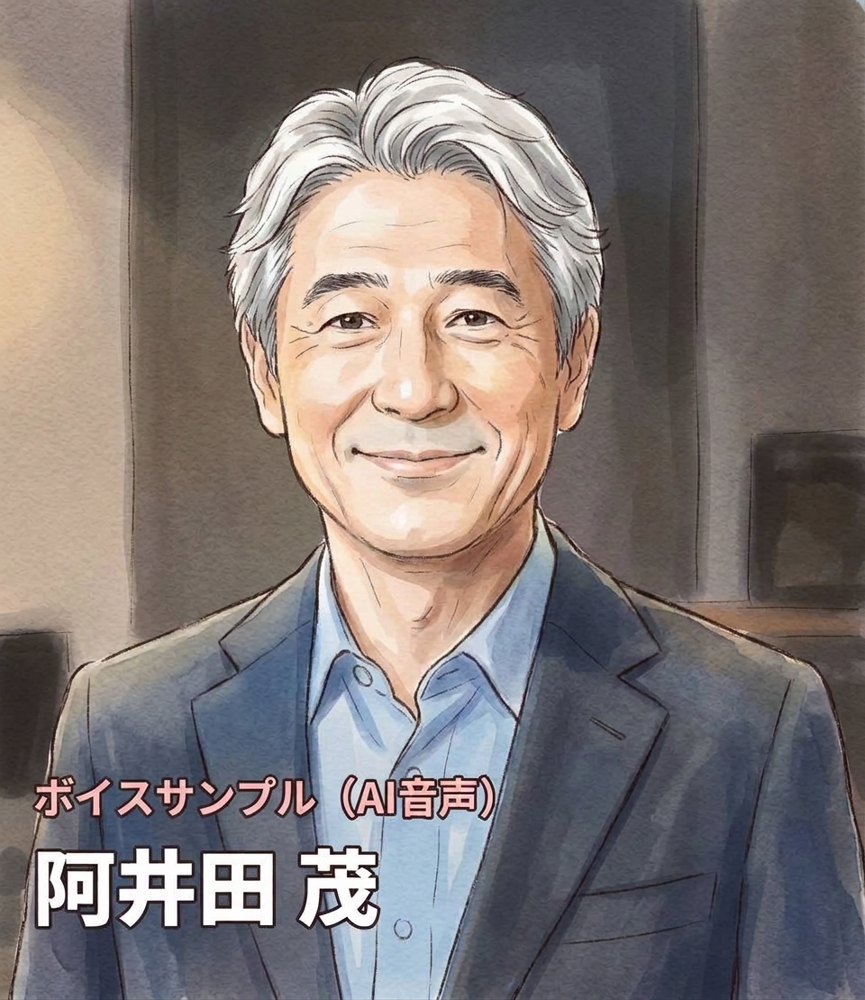

📺 今日のテレビクイズ
クイズを始める

デイサービスなぎさにお通いのみなさん、こんにちは。
お元気でお過ごしですか？
私は今日のテレビクイズの声を担当している、あいだしげるです。
今日、みなさんにテレビでお出しするクイズはそんなに難しくありません。
もし分からなくても、まわりの皆さんと相談して答えを出して下さい。
あせらないで、ゆっくり考えてくださいね。
楽しみながらやりましょう。
さあ、それでは始めましょう！
挨拶をスキップしてクイズへ ➔
⛶ 全画面